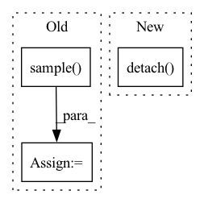

Pattern ID :28739

Before Change
mu = self.forward(input)
sigma = torch.ones_like(mu)
dist = Normal(mu, sigma)
action = dist.sample().detach().item()
return action
def get_distribution(self):
After Change
return x
def act(self, input):
action = self.forward(input).detach().item()
return action
In pattern: SUPERPATTERN
Frequency: 3
Non-data size: 3
Instances
Fragment ID: 84643666
Project Name: deligentfool/policy_based_rl
Commit Name: b5bb911692dd343e7e89afce2c0a5b49c27e14f2
Time: 2020-02-17
Author: 1027660817@qq.com
File Name: DDPG/ddpg.py
M Class Name: policy_net
N Class Name: policy_net
M Method Name: act(2)
N Method Name: act(2)
M Parent Class: nn.Module
N Parent Class: nn.Module
M File Name: DDPG/ddpg.py
N File Name: DDPG/ddpg.py
M Start Line: 48
M End Line: 51
N Start Line: 49
N End Line: 49
'>
Before Change
mu = self.forward(input)
sigma = torch.ones_like(mu)
dist = Normal(mu, sigma)
action = dist.sample().detach().item()
return action
After Change
return x
def act(self, input):
action = self.forward(input).detach().item()
return action
'>
Fragment ID: 84643664
Project Name: deligentfool/policy_based_rl
Commit Name: b5bb911692dd343e7e89afce2c0a5b49c27e14f2
Time: 2020-02-17
Author: 1027660817@qq.com
File Name: TD3/td3.py
M Class Name: policy_net
N Class Name: policy_net
M Method Name: act(2)
N Method Name: act(2)
M Parent Class: nn.Module
N Parent Class: nn.Module
M File Name: TD3/td3.py
N File Name: TD3/td3.py
M Start Line: 49
M End Line: 52
N Start Line: 50
N End Line: 50
'>
Before Change
P = 10
points = np.concatenate(
[X.projection(_G.sample()) for _ in range(P)],
axis=1
)
assert points.shape == (X.dim, P)
B = 5
features = np.random.randn(B, in_rep.size, P)
filters = np.zeros((out_rep.size, in_rep.size, basis.dim, P), dtype=np.float)
filters = basis.sample(points, out=filters)
self.assertFalse(np.isnan(filters).any())
self.assertFalse(np.allclose(filters, np.zeros_like(filters)))
a = basis.sample(points)
b = basis.sample(points)
assert np.allclose(a, b)
output = np.einsum("oifp,bip->bof", filters, features)
for g in G.testing_elements():
output1 = np.einsum("oi,bif->bof", out_rep(g), output)
transformed_points = X.action(inclusion(g)) @ points
transformed_filters = basis.sample(transformed_points)
transformed_features = np.einsum("oi,bip->bop", in_rep(g), features)
output2 = np.einsum("oifp,bip->bof", transformed_filters, transformed_features)
if not np.allclose(output1, output2):
print(f"{in_rep.name}, {out_rep.name}: Error at {g}")
After Change
print(f"{in_rep.name}, {out_rep.name}: Error at {g}")
print(a)
aerr = torch.abs(output1 - output2).detach().numpy()
err = aerr.reshape(-1, basis.dim).max(0)
print(basis.dim, (err > 0.01).sum())
for idx in range(basis.dim):
'>
Fragment ID: 84643670
Project Name: quva-lab/escnn
Commit Name: 98a89c5f80da2d489df613d8c73d943c69fb7f51
Time: 2022-08-28
Author: gabriele.cesa@gmail.com
File Name: test/kernelspaces/test_restrictedwignereckart.py
M Class Name: TestWEbasis
N Class Name: TestWEbasis
M Method Name: _check_irreps(6)
N Method Name: _check_irreps(6)
M Parent Class: TestCase
N Parent Class: TestCase
M File Name: test/kernelspaces/test_restrictedwignereckart.py
N File Name: test/kernelspaces/test_restrictedwignereckart.py
M Start Line: 224
M End Line: 274
N Start Line: 309
N End Line: 353